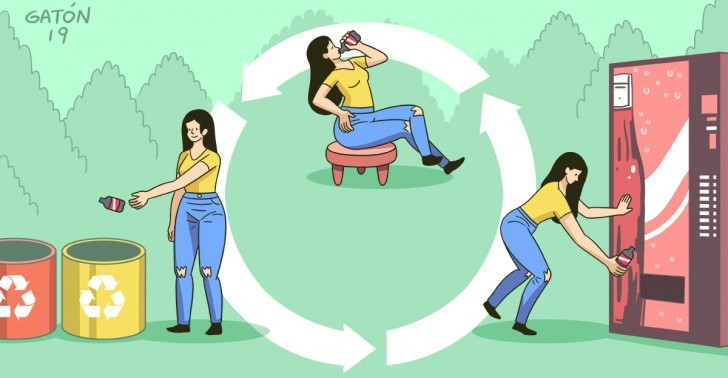

REUTILIZACIÓN DE REQUISITOS
| La reutilización de requisitos es la capacidad de emplear en un sistema los requisitos ya usados anteriormente. Esto permite la optimización de los recursos durante el desarrollo y la disminución de errores. El reutilizar pruebas y casos de usos asociados a los requisitos así como las trazas entre ellos permite reutilizar las funcionalidades completas de los requisitos. |  |
Anterior |